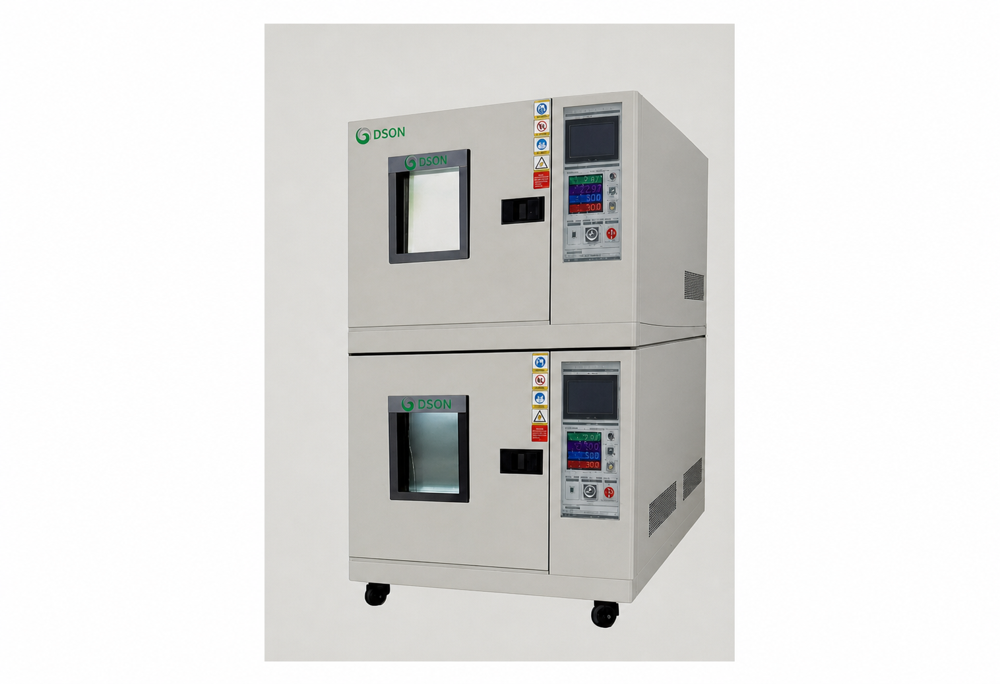
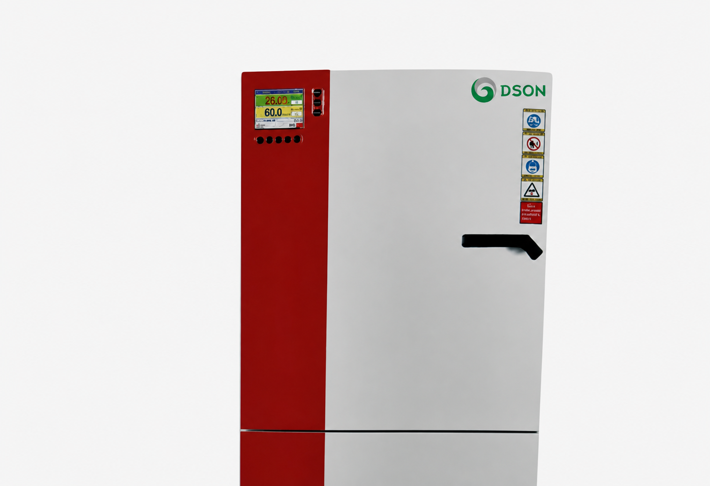
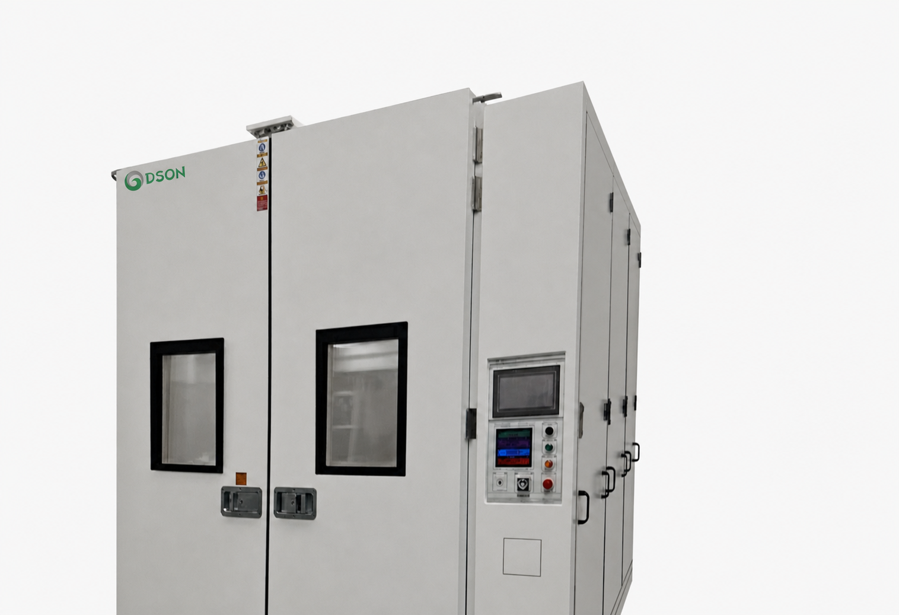

PRODUCT CENTER
环境试验设备产品中心
点击产品即可进入型号、性能参数与适用标准。产品图仅展示设备外观，最终规格与配置以正式报价书及技术协议为准。
TEMPERATURE & HUMIDITY
温湿度与温变设备

01
恒温恒湿试验箱
DTH 系列，覆盖多种容积、温度与湿度范围，适用于高低温及交变湿热试验。
查看 DTH 规格
02
多层式恒温恒湿试验箱
双层独立测试空间，适合提高样品并行测试效率。
查看 JHHS-415T 规格
03
快速温度变化试验箱
支持 5、10、15℃/min 等升降温需求，适用于快速温变与应力筛选。
查看快速温变规格
04
药品稳定性试验箱
PJHH 系列，用于药品稳定性、长期与加速试验环境控制。
查看 PJHH 规格
05
步入式恒温恒湿试验室
适合大型工件、整机与批量样品的环境模拟与可靠性试验。
查看步入式规格
06
光伏组件专用试验箱
面向光伏组件湿热、湿冻与温度循环试验的大型环境箱。
查看 JHWA 规格
CONFIGURATION NOTICE
规格可按项目需求配置
请提供样品尺寸、负载、温湿度范围、变化速率、标准、供电、冷却与场地信息，便于确认设备方案。
以上規格可依實際需求與配置調整，請以正式報價書及技術協議為準。
联系得声